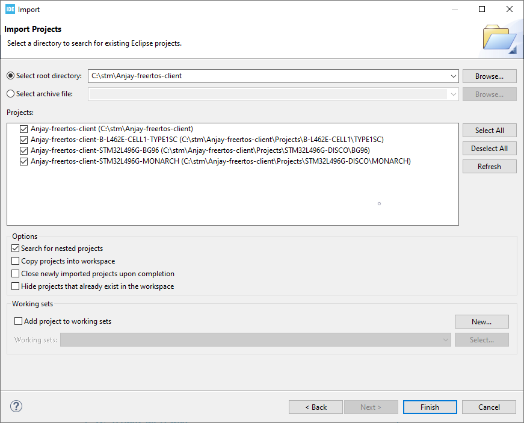
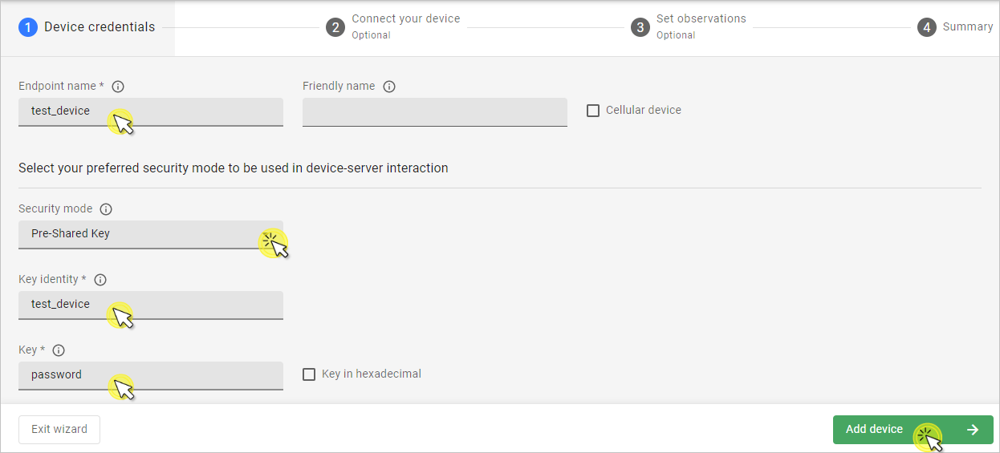
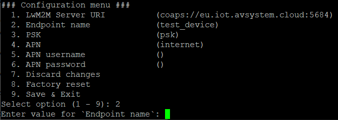
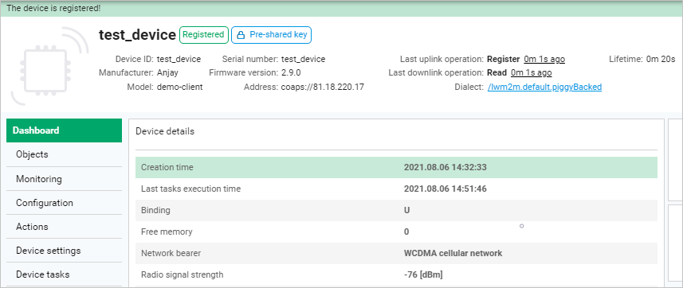

STM32L496G-DISCO/BG96#
Integrate your P-L496G-CELL02 Discovery kit board along with the default-provided Quectel BG96 modem.
Prerequisites#
- The STM32L496G-DISCO/BG96 board with a USB cable.
- Installed STM32CubeIDE.
- Installed minicom (for Linux) or RealTerm or PuTTy (for Windows) or other serial communication program.
- A user with access to the Coiote IoT Device Management platform.
Prepare binaries#
Use an already built binary#
To get the latest binary file and flash the board:
- Go to Anjay-freertos-client.
- Download the
Anjay-freertos-client-STM32L496G-BG96.binfile. - To flash the board, open your File manager and drag the downloaded
.binfile to your DIS_L496ZG external device. - You will see a blinking diode on your board. The diode will stop blinking as soon as the flashing is finished.
The board is now flashed: you can go to the Connecting to the LwM2M Server step.
Start development using samples#
Note
This step is optional. If you've gone through the Use an already built binary step, you can go to Connecting to the LwM2M Server right away.
Part 1: Cloning the Anjay freeRTOS client repository#
Enter the command line interface on your machine and paste the following command:
git clone --recursive https://github.com/AVSystem/Anjay-freertos-client
Part 2: Compiling the board#
- Connect the STM32L496G-DISCO board to a USB port of your machine.
- Go to the STM32CubeIDE.
- Import the project cloned in the previous step to your workspace:
- From the navigation bar, select File and click Import.
- From the General list, select Existing Projects into Workspace and click Next.
- In Select root directory, indicate the catalog containing the cloned Anjay freeRTOS client repository.
- In the Projects field, select Anjay-freertos-client-STM32L496G-BG96 and click Finish. 
- In the Project Explorer, navigate to the Anjay-freertos-client-STM32L496G-BG96 project:
- Right-click on the project name and select Build Project. The build should take less than one minute to complete.
- After the build is finished, right-click on the project name, select Run As and click the 1 STM32 Cortex-M C/C++ Application option.
- In the Lauch Configuration Selection, choose the Anjay-freertos-client-STM32L496G-BG96 option and click OK.
- After the build and run are complete, the board is now compiled.
Connecting to the LwM2M Server#
To connect to Coiote IoT Device Management LwM2M Server, please register at https://eu.iot.avsystem.cloud.
Note
If you use the BG96-based configuration, you need to upgrade the modem firmware to at least the BG96MAR02A08M1G revision. Older versions may cause unexpected loss of connection.
To upgrade the firmware, download the following .zip files:
- Pack_BG96MAR02A08M1G_01.012.01.012,
- Quectel_LTE_Windows_USB_Driver_V2.0,
- QFlash_V4.10.
Then, follow a step-by-step instruction in Pack_BG96MAR02A08M1G_01.012.01.012. Mind that links from steps 2 and 4 of this instruction don't work correctly. For this reason you will need to use the downloaded Quectel_LTE_Windows_USB_Driver_V2.0 file for step 2 and QFlash_V4.10 file for step 4.
To connect the board:
- Log in to Coiote DM and from the left side menu, select Device Inventory.
- In Device Inventory, click Add device.
- Select the Connect your LwM2M device directly via the Management server tile.

- In the Device credentials step:
- In the Device ID enter your board endpoint name, e.g.
test_device.  - In the Security mode section, select the PSK (Pre-Shared Key) mode:
- In the Key identity field, type the same name as in the
Endpoint namefield. - In the Key field, type the shared secret used in the device-server authentication.
- In the Key identity field, type the same name as in the
- In the Device ID enter your board endpoint name, e.g.
- Click the Add device button and Confirm in the confirmation pop-up.
- In the Connect your device step, follow the next section to run the client and connect it to the server.
- In the Device credentials step:
Configuring the Client#
- With the board still connected to a serial port interface, open a serial communication program.
-
Press the reset button located on the board. This should trigger the following prompt:
Press any key in 3 seconds to enter config menu... -
Press any key and in the configuration menu, change the default credentials to your data by following the instructions presented in the program and save it. 
Important
APN (Access Point Name) is the name of a gateway between a GSM, GPRS, 3G and 4G mobile network and another computer network. If you use built-in eSIM card truphone then change APN to iot.truphone.com.
Note
If you use external eSIM card you have to check APN used by SIM card's provider.
-
Go to Coiote DM to check if your device connected. Click Next, then Go to Summary, then Finish. You will see your Device Center view:

Tip
LwM2M Server URI, endpoint name and other information can be found in the Configuration tab.